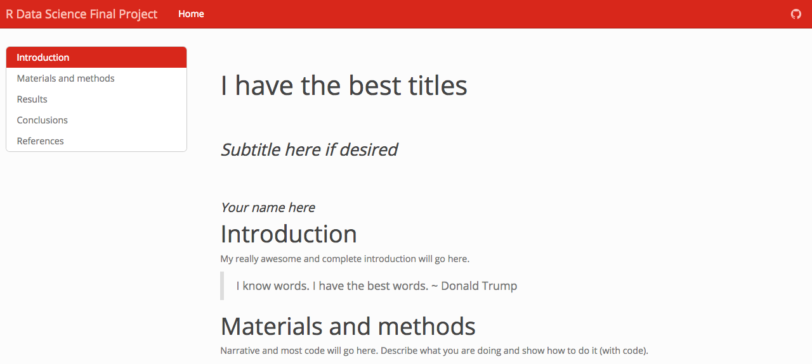
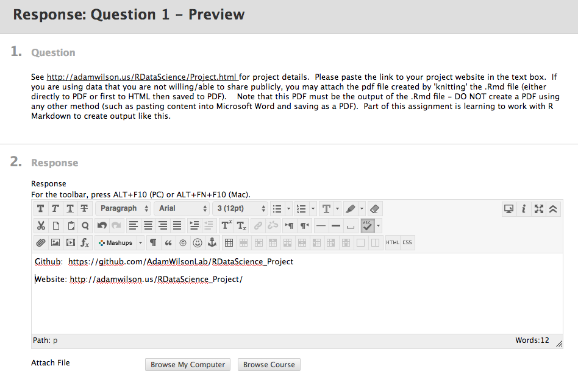
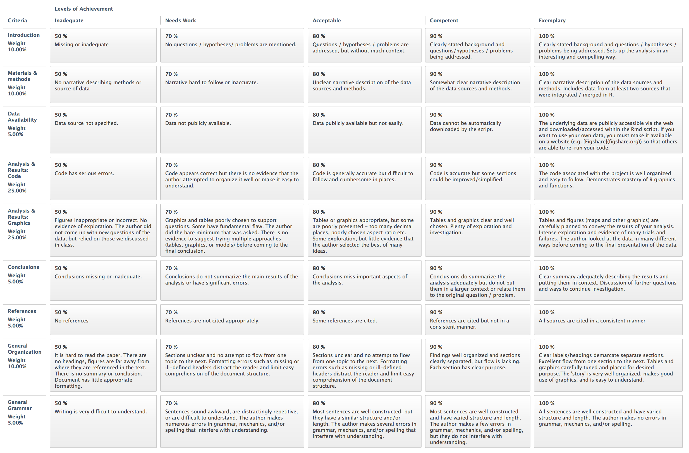

Final Project
Description
The final project will consist of a poster-length report summarizing an analysis of your choice, coded in R, and presented within a R Markdown document. The topic can be related to your research interests or a separate topic.
Your project does not have to involve big data or complicated analyses. I’m looking for a demonstration of your creativity and programming skills. A small, well designed project is better than a large, incomplete one. Please focus on quality over quantity.
One limitation is that your project must use publicly accessible data. If you want to use your own data, you must make it available on a website (e.g. Figshare or Github) so that others are able to re-run your code. Also check out ROpenSci which has libraries that can pull data from many different sources. You can also download data from publicly accessible servers.
Project Phases
Project Proposal
The project proposal will about 1 page in length and include the following:
- Introduction to problem/question
- Links to inspiring examples: Include links and screenshots of a few (~3-5) example graphics found on the internet that convey what you want to do. Include a few sentences about why you selected each link.
- Proposed data sources: Be as specific as possible.
- Proposed methods: List the approach you will use. Don’t simply list packages, tell me what you will do with them.
- Expected results: Describe what you want to produce (graphics, analyses, etc.)
Finding good data takes time, and can take longer than the time to tidy your data. This task could easily take 3-6 hours to find the data you need for your project. After you find good data sources make sure to complete the remaining tasks.
Use this template (which is an R Markdown File) for your project proposal. You can see what this file looks like ‘after rendering’ here.
First Draft
The first draft of your project will be assessed by your peers in UBlearns. The objectives of the peer evaluation are:
- Expose you to the work of your peers so you know what others are working on
- Provide an opportunity to share your knowledge to improve their project
You should use the project website template (or similar) to generate a html version of your project report. See the instructions here to set up your project. If your project requires any data not available in public repositories, you should put it in a folder called /data in your project’s home directory and then import it into R with read.csv('data/filname.csv') or similar so that anyone with a copy of the repository can re-create the HTML output.
Submission Instructions
You have three options for submitting your project:
- PREFERRED OPTION: Submit links to your GitHub repository and website.
- Your project repository looks something like this:

- Your public website link looks something like this: 
- Your submission screen in UBLearns will look like this: 
- Your project repository looks something like this:
- Upload the .Rmd file that creates your output. Use this option only if you are unwilling to publicly post your project.
- Upload a PDF file. If you are unable to share your data you may be permitted to upload a PDF instead of the source .Rmd. To make the PDF, I recommend you compile the .Rmd document to HTML (as explained here) and then open the html file in a browser (chrome, explorer, safari, etc.) and print it / save it as a PDF. This is the preferred route as you also get the HTML version this way. DO NOT create the PDF using other software (like pasting things into Microsoft Word), a big part of this project is learning how to create the dynamic documents using R Markdown. This option only available with instructor approval.
Evaluation Instructions
You will be assigned two projects and evaluate them according to the instructions and rubric below.
- Go to UBLearns->Assignments->Final Project-> First Draft Peer Review to find your assigned reports.
- Go to the github page linked in the assignment and download the repository as a zip file (click on the
 button).
button). - Unzip the file after it downloads
- Open the project or
index.Rmdin RStudio and clickknitorBuild Websitein theBuildtab in the upper right.
Evaluate the following and enter your scores in UBlearns:
- Output: The .Rmd produces HTML output with:
- section headers for all the major sections of the paper
- a draft of the complete introduction.
Be sure to install any required libraries (do not deduct points if it fails because you don’t have a library installed).
- Introduction [~ 200 words]: Clearly stated background and questions / hypotheses / problems being addressed. Sets up the analysis in an interesting and compelling way.
- 0-50% Missing or inadequate
- 50-70% No Questions / Hypotheses/ Problems are mentioned
- 70-80% Questions / Hypotheses/ Problems are addressed, but without much context or explanation.
- 80-90% Clearly stated background sets up the questions / hypotheses/ problems being addressed by the analysis
- 90-100% Clearly stated background and questions / hypotheses/ problems being addressed by the analysis. Sets up the analysis in a interesting and compelling way.
- Data: Script downloads at least one dataset automatically through the internet. This could use a direct download (e.g. download.file()) or an API (anything from ROpenSci).
- Figure: The HTML file includes at least one figure of the data.
Final Draft
You will have two opportunites to submit your final project and your final grade on the project will be the highest of the two submissions.
Links to your project website will be uploaded to UBLearns at the end of the semester and posted on the course website.
The final project will include and be graded as follows:
- Title (<25 words)
- Introduction [~ 200 words, 10%]
- Clearly stated background and questions / hypotheses / problems being addressed. Sets up the analysis in an interesting and compelling way.
- Materials and methods [~ 200 words]
- Narrative (10%): Clear narrative description of the data sources and methods. Includes data from at least two sources that were integrated / merged in R.
- Code (25%): The code associated with the project is well organized and easy to follow. Demonstrates mastery of R graphics and functions.
- Data (5%): The underlying data are publicly accessible via the web and downloaded/accessed within the Rmd script. If you want to use your own data, you must make it available on a website (e.g. Figshare) so that others are able to re-run your code.
- Results [~200 words, 25%]
- Tables and figures (maps and other graphics) are carefully planned to convey the results of your analysis. Intense exploration and evidence of many trials and failures. The author looked at the data in many different ways before coming to the final presentation of the data.
- Conclusions [~200 words, 5%]
- Clear summary adequately describing the results and putting them in context. Discussion of further questions and ways to continue investigation.
- References [5%]
- All sources are cited in a consistent manner
- General Scores
- General organization (10%): Clear labels/headings demarcate separate sections. Excellent flow from one section to the next. Tables and graphics carefully tuned and placed for desired purpose.The ‘story’ is very well organized, makes good use of graphics, and is easy to understand.
- General Grammar (5%): All sentences are well constructed and have varied structure and length. The author makes no errors in grammar, mechanics, and/or spelling.
See the project rubric below for more details and examples.

Note that the word counts are quite short (~200 words per section). This does not mean it’s easy! In fact, conveying all the necessary information succinctly requires extra effort. If English is not your first language, you are encouraged to contact the UB Writing Center to get help writing succinctly and clearly. They schedule 45 minute sessions to go over your writing which can dramatically improve the quality of your project. Plan ahead to schedule this before upcoming deadlines.
The more complete the second draft, the more feedback I’ll be able to provide to ensure an excellent final project. So it’s in your interest to finish as much as possible. In addition to the details from the first draft, I would like to see drafts of the text and figures/tables/etc in each section.
When submitting your your second draft, you can include any questions or comments in the draft (e.g., “I’m planning to do X, but I’m not sure how to organize the data appropriately”) or as a comment in the UBLearns submission webpage. Please do not include these comments in the final submission.
Formatting
The final project will be produced as a RMarkdown Website that includes all the steps necessary to run the analysis and produce the output (figures, tables,etc.). For examples of similar documents, explore the RPubs website.
See the RMarkdown page for ideas on different html output designs. In particular, check out the FlexaDashboard options if you want to include interactive displays.
Figures
Figures (maps and other graphics) are a vital component of scientific communication and you should carefully plan your figures to convey the results of your analysis.
References
You should cite any relevant materials (including data sources and methods) in the text using a standard author-date citation format (e.g. Wilson, 2015) and then described in a References section. You can either compile the references manually (e.g. cutting and pasting the citation into the references section) or use the automated system in RMarkdown explained here. Other citation styles are acceptable as long as they are consistent, complete, and easy to understand.
‘Lightning’ Project Presentation
Many conferences and workshops have been moving from the traditional presentation and poster sessions to use alternative mechanisms for disseminating information. Amongst the most popular are the short talk formats including the lightning talk and ignite Sessions.
On the last day of class, each student will give a 5 minute overview of their project. You will open the html version on the screen (no need to make a separate presentation). It’s OK if not all the text will be readable on the screen (as you know the projector is really low resolution). However, you should think about this presentation when designing your project. Good use of headers, figures, and simple tables will make it easier to present!
It’s important to remember that most of the guidelines for good presentations still apply. You should still make eye contact with the audience, you should still be prepared to stop earlier or handle awkward questions, you should still remember to go to the bathroom beforehand. What the short talk format provides you with is a framework to get down to the essence of what you are trying to say to the audience.
Make your point and make it quickly
You will not be able to cover all the information in your project. Your goal is to get us excited about what you have done.
You are not there to provide the detail required for them to reproduce your work, you’re there to inspire them to search out your work. Remember they can download and reproduce your project if they want to.
Practice against a timer. Practice standing up. Five minutes is a really short time when presenting. And yet make sure you go slow and steady and reduce the amount you say rather than rushing to try and cram more in.
And remember, the audience is on your side!
In summary, remember that for the presentation, DELIVERY is more important than CONTENT. This doesn’t mean that your content shouldn’t be good, but that it is always better to get across something that sticks in your audience’s mind, than getting them to forget everything you’ve just said.
Time will be tight for this final day, so please practice so that you will stay within the 5 minute time period. The objectives of this presentation are primarily to share your work with your classmates and hopefully give you more ideas of ways you can use programming (and R) in your research.
Resources
Sites with examples of visual display of quantitative information
- http://www.informationisbeautiful.net
- http://flowingdata.com
- https://visual.ly/m/design-portfolio/
- 40 Brilliant and Complex Topics Explained Perfectly By Infographics
- NY Times Graphics Department
- Open Data through R: This Task View contains information about using R to obtain, parse, manipulate, create, and share open data. Much open data is available on the web, and the WebTechnologies TaskView addresses how to obtain and parse web-based data. There is obvious overlap between the two TaskViews, so some packages are described on both. There is also a considerable amount of open data available as R packages on CRAN.
References
Suggestions for lightening presentations adapted from the Software Sustainability Institute.